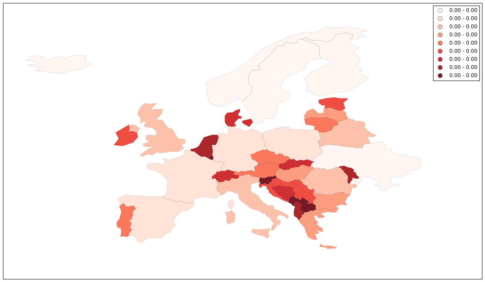

Using SD to understand the SD Fever¶
In this script, we will use georeferenced data at a national level to simulate a multiregional infectious disease model. We’ll then present the advantages to project spatial data produced by our simulation back on a map.
%matplotlib inline
import pandas as pd
import pysd
/Users/houghton/anaconda/lib/python2.7/site-packages/pandas/computation/__init__.py:19: UserWarning: The installed version of numexpr 2.4.4 is not supported in pandas and will be not be used
UserWarning)
The model we’ll use to represent the dynamics of the disease is a simple SIR model, with individuals aggregated into stocks by their health condition S-Susceptible, I-Infectious, R-Recovered. We assume that the complete population is susceptible, therefore the initial value of susceptible stock is equal to the total population. In addition, we built on the hypothesis that from now all infected person are reported.
from IPython.display import Image
Image(filename='../../models/SD_Fever/SIR_model.png')

In Vensim our model was parameterized with 1000 suceptible, 5 infectious and 0 recovered individuals, a recovery period of 5 days and a contact infectivity of 70%.
When we do not specificy anything else, the parameters and setting (e.g. timestep, simulation time) from the Vensim model are used.
model = pysd.read_vensim('../../models/SD_Fever/SIR_Simple.mdl')
result = model.run()
result.plot();
Modify parameter values¶
As we have seen before, we can specify changes to the parameters of the model in the call to the run function. Here we set the contact infectivity to 30% before running the simulation again. If you like, try what happens when you change some of the other parameters.
result = model.run(params={ 'total_population':1000,
'contact_infectivity':.3,
'recovery_period': 5
})
result.plot();

Change Model settings¶
We can also change in a very simpe manner the simulation time and timestep of the model. An easy way to do it is to use numpy linspace which returns evenly spaced numbers over a specified interval.
np.linspace(Start, Stop, Number of timestamps)
import numpy as np
sim_time = 10
np.linspace(0, sim_time, num=sim_time*4+1)
array([ 0. , 0.25, 0.5 , 0.75, 1. , 1.25, 1.5 , 1.75,
2. , 2.25, 2.5 , 2.75, 3. , 3.25, 3.5 , 3.75,
4. , 4.25, 4.5 , 4.75, 5. , 5.25, 5.5 , 5.75,
6. , 6.25, 6.5 , 6.75, 7. , 7.25, 7.5 , 7.75,
8. , 8.25, 8.5 , 8.75, 9. , 9.25, 9.5 , 9.75, 10. ])
We can use the return_timestamps keyword argument in PySD. This argument expects a list of timestamps, and will return simulation results at those timestamps.
model.run(return_timestamps=np.linspace(0, sim_time, num=sim_time*2+1))
| cumulative cases | infectious | recovered | susceptible | |
|---|---|---|---|---|
| 0.0 | 0.000000 | 5.000000 | 0.000000 | 1000.000000 |
| 0.5 | 0.750000 | 5.250000 | 0.500000 | 999.250000 |
| 1.0 | 1.536909 | 5.511909 | 1.025000 | 998.463091 |
| 1.5 | 2.362425 | 5.786234 | 1.576191 | 997.637575 |
| 2.0 | 3.228310 | 6.073495 | 2.154814 | 996.771690 |
| 2.5 | 4.136393 | 6.374229 | 2.762164 | 995.863607 |
| 3.0 | 5.088572 | 6.688986 | 3.399587 | 994.911428 |
| 3.5 | 6.086815 | 7.018329 | 4.068485 | 993.913185 |
| 4.0 | 7.133156 | 7.362838 | 4.770318 | 992.866844 |
| 4.5 | 8.229704 | 7.723102 | 5.506602 | 991.770296 |
| 5.0 | 9.378635 | 8.099723 | 6.278912 | 990.621365 |
| 5.5 | 10.582199 | 8.493314 | 7.088885 | 989.417801 |
| 6.0 | 11.842715 | 8.904499 | 7.938216 | 988.157285 |
| 6.5 | 13.162571 | 9.333905 | 8.828666 | 986.837429 |
| 7.0 | 14.544228 | 9.782172 | 9.762056 | 985.455772 |
| 7.5 | 15.990213 | 10.249939 | 10.740274 | 984.009787 |
| 8.0 | 17.503119 | 10.737852 | 11.765268 | 982.496881 |
| 8.5 | 19.085605 | 11.246552 | 12.839053 | 980.914395 |
| 9.0 | 20.740391 | 11.776683 | 13.963708 | 979.259609 |
| 9.5 | 22.470255 | 12.328879 | 15.141376 | 977.529745 |
| 10.0 | 24.278032 | 12.903768 | 16.374264 | 975.721968 |
Geographical Information¶
Geospatial information as area on a map linked to several properties are typically stored into shapefiles.
For this script, we will use geopandas library to manage the shapefiles, and utilize its inherent plotting functionality.
import geopandas as gp
shapefile = '../../data/SD_Fever/geo_df_EU.shp'
geo_data = gp.GeoDataFrame.from_file(shapefile)
geo_data.head(5)
---------------------------------------------------------------------------
ImportError Traceback (most recent call last)
<ipython-input-7-17f6f8f07da0> in <module>()
----> 1 import geopandas as gp
2
3 shapefile = '../../data/SD_Fever/geo_df_EU.shp'
4 geo_data = gp.GeoDataFrame.from_file(shapefile)
5 geo_data.head(5)
/Users/houghton/anaconda/lib/python2.7/site-packages/geopandas/__init__.pyc in <module>()
2 from geopandas.geodataframe import GeoDataFrame
3
----> 4 from geopandas.io.file import read_file
5 from geopandas.io.sql import read_postgis
6 from geopandas.tools import sjoin
/Users/houghton/anaconda/lib/python2.7/site-packages/geopandas/io/file.py in <module>()
1 import os
2
----> 3 import fiona
4 import numpy as np
5 from shapely.geometry import mapping
/Users/houghton/anaconda/lib/python2.7/site-packages/fiona/__init__.py in <module>()
70 from six import string_types
71
---> 72 from fiona.collection import Collection, BytesCollection, vsi_path
73 from fiona._drivers import driver_count, GDALEnv, supported_drivers
74 from fiona.odict import OrderedDict
/Users/houghton/anaconda/lib/python2.7/site-packages/fiona/collection.py in <module>()
5 import sys
6
----> 7 from fiona.ogrext import Iterator, ItemsIterator, KeysIterator
8 from fiona.ogrext import Session, WritingSession
9 from fiona.ogrext import (
ImportError: dlopen(/Users/houghton/anaconda/lib/python2.7/site-packages/fiona/ogrext.so, 2): Library not loaded: @rpath/libtiff.5.dylib
Referenced from: /Users/houghton/anaconda/lib/libgdal.1.dylib
Reason: Incompatible library version: libgdal.1.dylib requires version 8.0.0 or later, but libtiff.5.dylib provides version 7.0.0
Then we can project the geographic shape of the elements on a map.
import matplotlib.pyplot as plt
geo_data.plot()
plt.xlim([-28, 50])
plt.ylim([30, 75])
plt.show()

And plot on of the georeferenced property (e.g. population)
geo_data.plot(column='population', scheme='fisher_jenks', alpha=0.9, k=9, linewidth=0.1,
cmap=plt.cm.YlOrRd, legend=False)
plt.xlim([-28, 50])
plt.ylim([30, 75])
plt.show()
---------------------------------------------------------------------------
TypeError Traceback (most recent call last)
<ipython-input-9-c9605dc38e75> in <module>()
1 geo_data.plot(column='population', scheme='fisher_jenks', alpha=0.9, k=9, linewidth=0.1,
----> 2 cmap=plt.cm.YlOrRd, legend=False)
3 plt.xlim([-28, 50])
4 plt.ylim([30, 75])
5 plt.show()
/Users/houghton/anaconda/lib/python2.7/site-packages/geopandas/geodataframe.pyc in plot(self, *args, **kwargs)
379
380 def plot(self, *args, **kwargs):
--> 381 return plot_dataframe(self, *args, **kwargs)
382
383 def _dataframe_set_geometry(self, col, drop=False, inplace=False, crs=None):
TypeError: plot_dataframe() got an unexpected keyword argument 'linewidth'
Run the model for each country¶
We want to run the core SD model for each country, with country specific paramterization.
Thus, we formulate a function that based on each row parameterizes the model with the value from geodata, performs the simulation and finally returns the number of infectious individuals over time.
def runner(row):
sim_time = 200
params= {'total_population':row['population'],
'contact_infectivity' : row['inf_rate']}
res = model.run(params=params,
return_timestamps=np.linspace(0, sim_time, num=sim_time*2+1))
return res['infectious']
Apply function along rows of the Dataframe.¶
We want to apply the function row-wise (by country) therefore we set axis to 1 (row) instead of default 0 (column). The result is a new dataframe with the produced simulation for each country.
res = geo_data.apply(runner, axis=1)
res.head()
| 0.0 | 0.5 | 1.0 | 1.5 | 2.0 | 2.5 | 3.0 | 3.5 | 4.0 | 4.5 | ... | 195.5 | 196.0 | 196.5 | 197.0 | 197.5 | 198.0 | 198.5 | 199.0 | 199.5 | 200.0 | |
|---|---|---|---|---|---|---|---|---|---|---|---|---|---|---|---|---|---|---|---|---|---|
| 0 | 5.0 | 5.407815 | 5.848892 | 6.325945 | 6.841907 | 7.399952 | 8.003512 | 8.656299 | 9.362329 | 10.125943 | ... | 1.235898e+01 | 1.174243e+01 | 1.115664e+01 | 1.060006e+01 | 1.007126e+01 | 9.568833e+00 | 9.091472e+00 | 8.637925e+00 | 8.207004e+00 | 7.797580e+00 |
| 1 | 5.0 | 5.127795 | 5.258857 | 5.393268 | 5.531115 | 5.672485 | 5.817468 | 5.966157 | 6.118646 | 6.275032 | ... | 7.391140e+04 | 7.532471e+04 | 7.675456e+04 | 7.820069e+04 | 7.966278e+04 | 8.114054e+04 | 8.263360e+04 | 8.414161e+04 | 8.566416e+04 | 8.720083e+04 |
| 2 | 5.0 | 6.939664 | 9.631786 | 13.368267 | 18.554246 | 25.752025 | 35.742032 | 49.607441 | 68.851599 | 95.561003 | ... | 8.710440e-08 | 7.927009e-08 | 7.216718e-08 | 6.579565e-08 | 6.015551e-08 | 5.514593e-08 | 5.050006e-08 | 4.620362e-08 | 4.225663e-08 | 3.865907e-08 |
| 3 | 5.0 | 4.958609 | 4.917560 | 4.876852 | 4.836480 | 4.796443 | 4.756736 | 4.717359 | 4.678307 | 4.639579 | ... | 1.937845e-01 | 1.921802e-01 | 1.905892e-01 | 1.890113e-01 | 1.874465e-01 | 1.858947e-01 | 1.843557e-01 | 1.828294e-01 | 1.813158e-01 | 1.798147e-01 |
| 4 | 5.0 | 5.130475 | 5.264354 | 5.401727 | 5.542685 | 5.687321 | 5.835731 | 5.988013 | 6.144269 | 6.304603 | ... | 7.030861e+04 | 7.130697e+04 | 7.230348e+04 | 7.329749e+04 | 7.428830e+04 | 7.527523e+04 | 7.625757e+04 | 7.723462e+04 | 7.820564e+04 | 7.916990e+04 |
5 rows × 401 columns
Transpose simulation results for plotting¶
The pandas line plot assumes that rows represent the timeseries and columns the different objects. Since our data is not yet in this form, we have to transpose the data. In pandas all we have to do is add an .T at the end.
import pandas as pd
df = pd.DataFrame(res).T
df.head(2)
| 0 | 1 | 2 | 3 | 4 | 5 | 6 | 7 | 8 | 9 | ... | 28 | 29 | 30 | 31 | 32 | 33 | 34 | 35 | 36 | 37 | |
|---|---|---|---|---|---|---|---|---|---|---|---|---|---|---|---|---|---|---|---|---|---|
| 0.0 | 5.000000 | 5.000000 | 5.000000 | 5.000000 | 5.000000 | 5.000000 | 5.000000 | 5.000000 | 5.000000 | 5.000000 | ... | 5.000000 | 5.000000 | 5.000000 | 5.000000 | 5.000000 | 5.000000 | 5.000000 | 5.000000 | 5.000000 | 5.000000 |
| 0.5 | 5.407815 | 5.127795 | 6.939664 | 4.958609 | 5.130475 | 4.763649 | 5.630614 | 5.293347 | 5.993628 | 5.197358 | ... | 7.459123 | 4.550577 | 5.240652 | 5.364989 | 5.125969 | 5.169376 | 5.245112 | 5.205252 | 4.595693 | 4.976995 |
2 rows × 38 columns
df.plot(legend=False);
Comparative Analysis¶
Next lets try to compare how severe a country is hit by the SD fever.
Rather than looking at the number of infectious persons over time, a better indicator for comparative analysis are the cumulative cases as percentage of population in each country.
We can reuse our code from before but instead of returning the number of infecious we return the cumulative cases.
def runner(row):
sim_time = 200
params= {'total_population':row['population'],
'contact_infectivity' : row['inf_rate']}
res = model.run(params=params,
return_timestamps=range(0,sim_time))
return res['cumulative_cases']
#TIP: Ensure you are using lower case letters and the character _ not space
res = geo_data.apply(runner, axis=1)
res.head()
| 0 | 1 | 2 | 3 | 4 | 5 | 6 | 7 | 8 | 9 | ... | 190 | 191 | 192 | 193 | 194 | 195 | 196 | 197 | 198 | 199 | |
|---|---|---|---|---|---|---|---|---|---|---|---|---|---|---|---|---|---|---|---|---|---|
| 0 | 0.0 | 1.931564 | 4.191064 | 6.834176 | 9.926028 | 13.542802 | 17.773617 | 22.722719 | 28.512051 | 35.284257 | ... | 2.643414e+06 | 2.643416e+06 | 2.643418e+06 | 2.643420e+06 | 2.643421e+06 | 2.643423e+06 | 2.643424e+06 | 2.643425e+06 | 2.643426e+06 | 2.643427e+06 |
| 1 | 0.0 | 1.284525 | 2.635551 | 4.056522 | 5.551057 | 7.122967 | 8.776255 | 10.515136 | 12.344040 | 14.267628 | ... | 3.207868e+05 | 3.353914e+05 | 3.505670e+05 | 3.663273e+05 | 3.826858e+05 | 3.996553e+05 | 4.172479e+05 | 4.354754e+05 | 4.543483e+05 | 4.738766e+05 |
| 2 | 0.0 | 6.044711 | 17.688969 | 40.119902 | 83.329609 | 166.565835 | 326.904336 | 635.757752 | 1230.660685 | 2376.436306 | ... | 1.026049e+07 | 1.026049e+07 | 1.026049e+07 | 1.026049e+07 | 1.026049e+07 | 1.026049e+07 | 1.026049e+07 | 1.026049e+07 | 1.026049e+07 | 1.026049e+07 |
| 3 | 0.0 | 0.909294 | 1.803595 | 2.683151 | 3.548204 | 4.398995 | 5.235758 | 6.058724 | 6.868121 | 7.664172 | ... | 5.280475e+01 | 5.284336e+01 | 5.288134e+01 | 5.291870e+01 | 5.295543e+01 | 5.299156e+01 | 5.302710e+01 | 5.306205e+01 | 5.309642e+01 | 5.313023e+01 |
| 4 | 0.0 | 1.290563 | 2.649358 | 4.079994 | 5.586268 | 7.172179 | 8.841937 | 10.599976 | 12.450961 | 14.399808 | ... | 3.414903e+05 | 3.555252e+05 | 3.699699e+05 | 3.848232e+05 | 4.000827e+05 | 4.157447e+05 | 4.318042e+05 | 4.482554e+05 | 4.650906e+05 | 4.823014e+05 |
5 rows × 200 columns
The answer is a simple matrix operation: divide row-wise the elements of our computed values by the column of the original geo data set where we had the population in each country.
Let’s try to perform this type of operation on a minimal example.
# Create arbitrary column
column = pd.Series([10, 0])
column
0 10
1 0
dtype: int64
# Create arbitrary pandas dataframe
df = pd.DataFrame(np.random.randint(1,5,size=(2, 3)), columns=list('ABC'))
df
| A | B | C | |
|---|---|---|---|
| 0 | 1 | 3 | 3 |
| 1 | 1 | 2 | 4 |
column*df
| 0 | 1 | A | B | C | |
|---|---|---|---|---|---|
| 0 | NaN | NaN | NaN | NaN | NaN |
| 1 | NaN | NaN | NaN | NaN | NaN |
Now we can translate this operation on our actual problem.
res = pd.DataFrame(res.T/geo_data["population"])
res.plot(legend=False);
Analysis of results¶
For example, we could study the impact of contact infectivity on the cumulative cases at the end of the simulation
geo_data['totalcases%pop'] = res.loc[199] # Slice the final value at the end of the simulation
df_scatter = pd.DataFrame(geo_data) # Geopandas dataframe to pandas Dataframe (geopandas tries to perform spatial analysis)
df_scatter.plot.scatter(x='inf_rate', y='totalcases%pop'); # Plot infectivity versus cumulative cases at the end of the simulation
How Spatial Analysis Leads to Insight¶
Finally, we present slighltly advanced Python scripts to get our simulation results projected on the map.
We merge the complete simulation results with our original georeferenced information just as we did in the step before.
geo_data.head(2)
| country | geometry | inf_rate | population | totalcases%pop | |
|---|---|---|---|---|---|
| 0 | Albania | POLYGON ((20.59024743010491 41.85540416113361,... | 0.356814 | 3639453.0 | 0.726325 |
| 1 | Austria | POLYGON ((16.97966678230404 48.12349701597631,... | 0.250476 | 8210281.0 | 0.057717 |
res.head(2)
| 0 | 1 | 2 | 3 | 4 | 5 | 6 | 7 | 8 | 9 | ... | 28 | 29 | 30 | 31 | 32 | 33 | 34 | 35 | 36 | 37 | |
|---|---|---|---|---|---|---|---|---|---|---|---|---|---|---|---|---|---|---|---|---|---|
| 0 | 0.000000e+00 | 0.000000e+00 | 0.000000e+00 | 0.000000e+00 | 0.000000e+00 | 0.000000e+00 | 0.000000e+00 | 0.000000e+00 | 0.000000e+00 | 0.000000e+00 | ... | 0.000000e+00 | 0.000000e+00 | 0.000000e+00 | 0.000000e+00 | 0.000000e+00 | 0.000000e+00 | 0.000000e+00 | 0.000000e+00 | 0.000000e+00 | 0.000000e+00 |
| 1 | 5.307292e-07 | 1.564532e-07 | 5.804221e-07 | 1.262086e-07 | 2.797414e-07 | 5.094781e-08 | 3.247481e-07 | 1.628636e-07 | 4.117605e-08 | 2.622006e-07 | ... | 4.582214e-07 | 1.133618e-08 | 4.005424e-08 | 1.709489e-07 | 5.763613e-08 | 1.868129e-07 | 2.840291e-07 | 7.280583e-07 | 1.592863e-08 | 2.077661e-08 |
2 rows × 38 columns
geo_data_merged = geo_data.merge(res.T, left_index=True, right_index=True)
geo_data_merged.head()
| country | geometry | inf_rate | population | totalcases%pop | 0 | 1 | 2 | 3 | 4 | ... | 190 | 191 | 192 | 193 | 194 | 195 | 196 | 197 | 198 | 199 | |
|---|---|---|---|---|---|---|---|---|---|---|---|---|---|---|---|---|---|---|---|---|---|
| 0 | Albania | POLYGON ((20.59024743010491 41.85540416113361,... | 0.356814 | 3639453.0 | 0.726325 | 0.0 | 5.307292e-07 | 1.151564e-06 | 1.877803e-06 | 2.727341e-06 | ... | 0.726322 | 0.726322 | 0.726323 | 0.726323 | 0.726324 | 0.726324 | 0.726324 | 0.726325 | 0.726325 | 0.726325 |
| 1 | Austria | POLYGON ((16.97966678230404 48.12349701597631,... | 0.250476 | 8210281.0 | 0.057717 | 0.0 | 1.564532e-07 | 3.210062e-07 | 4.940783e-07 | 6.761105e-07 | ... | 0.039071 | 0.040850 | 0.042699 | 0.044618 | 0.046611 | 0.048677 | 0.050820 | 0.053040 | 0.055339 | 0.057717 |
| 2 | Belgium | POLYGON ((3.314971144228537 51.34578095153609,... | 0.855631 | 10414336.0 | 0.985227 | 0.0 | 5.804221e-07 | 1.698521e-06 | 3.852373e-06 | 8.001433e-06 | ... | 0.985227 | 0.985227 | 0.985227 | 0.985227 | 0.985227 | 0.985227 | 0.985227 | 0.985227 | 0.985227 | 0.985227 |
| 3 | Bulgaria | POLYGON ((22.65714969248299 44.23492300066128,... | 0.183375 | 7204687.0 | 0.000007 | 0.0 | 1.262086e-07 | 2.503363e-07 | 3.724174e-07 | 4.924856e-07 | ... | 0.000007 | 0.000007 | 0.000007 | 0.000007 | 0.000007 | 0.000007 | 0.000007 | 0.000007 | 0.000007 | 0.000007 |
| 4 | Bosnia and Herzegovina | POLYGON ((19.00548628101012 44.86023366960916,... | 0.251521 | 4613414.0 | 0.104543 | 0.0 | 2.797414e-07 | 5.742728e-07 | 8.843763e-07 | 1.210875e-06 | ... | 0.074021 | 0.077063 | 0.080194 | 0.083414 | 0.086722 | 0.090116 | 0.093598 | 0.097163 | 0.100813 | 0.104543 |
5 rows × 205 columns
Plotting simulation results on map with Ipywidgets¶
Ipywidgets are interactive HTML widgets for IPython notebooks. Users gain control of their data and can visualize changes in the data.
import matplotlib as mpl
from ipywidgets import interact, FloatSlider, IntSlider,RadioButtons, Dropdown
sim_time = 200
slider_time = IntSlider(description = 'Time Select',
min=0, max=sim_time-1, value=1)
@interact( time = slider_time) # Scenario = select_scenario,
def update_map(time): # Scenario
ax = geo_data_merged.plot(column=time, scheme='fisher-jenks', alpha=0.9, k=9, linewidth=0.1,
cmap=plt.cm.Reds, legend=True, figsize=(20, 30))
plt.xlim(-28, 50)
plt.ylim(30, 75)
plt.xticks([])
plt.yticks([])
C:UsersSchwarzAppDataLocalEnthoughtCanopy32Userlibsite-packagesgeopandasgeodataframe.py:447: UserWarning: Unrecognized scheme "fisher-jenks". Using "Quantiles" instead return plot_dataframe(self, *args, **kwargs)
...